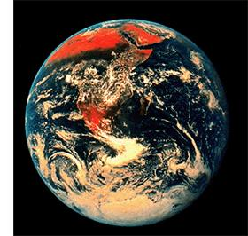

The Apollo 17 astronauts took this photo, which shows the Arabian Peninsula and Africa, as they left Earth orbit en route to the moon on Dec. 7, 1972. This view of the Earth from space drove home how finite and precious our resources are.